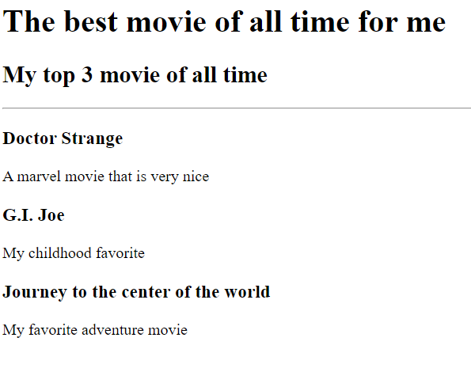
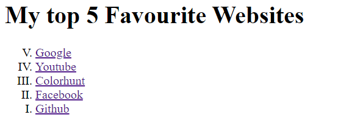
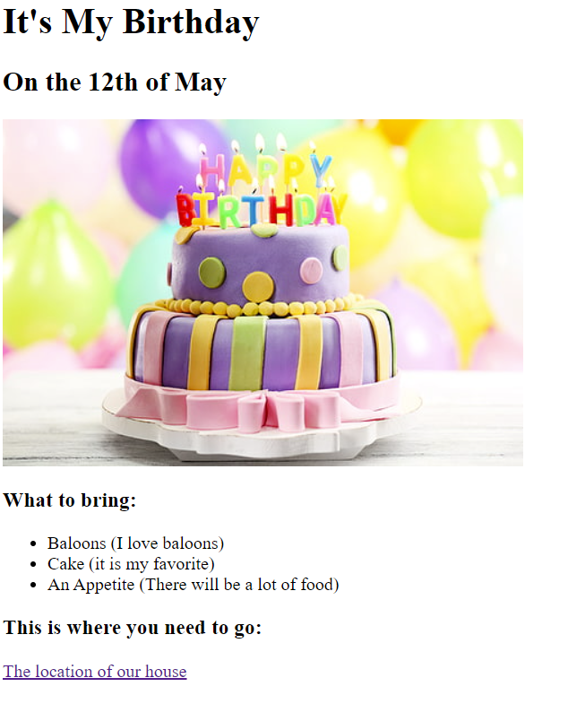

Joshua Vincent Padilla's Portfolio
Hello there, im a Web Developer
Heres my recent projects:
Movie Ranking Project

Cinamon Recipe
My top 5 Favorite Websites

Birthday Invitation

About Me
Contact me